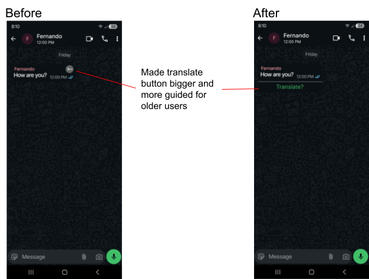
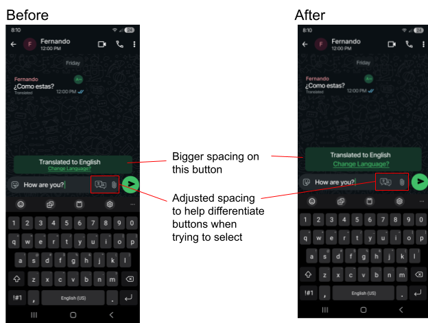
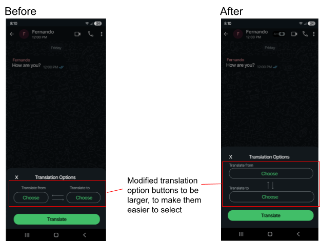

Overview
What changed after testing
Our testing showed that users needed translation controls that were easier to discover, easier to select, and clearer in purpose. The redesigns below focus on larger touch targets, stronger labels, and layouts that reduce confusion during translation tasks.
Before and After 01
Translating received texts
During user testing, participants often had trouble finding the translation feature because the original button was small and easy to miss. The redesign makes the translation action more noticeable by increasing the button size and adding a clearer label beside the received message.

Before and After 02
Translating written texts
Participants reported difficulty selecting the right control because the buttons were placed too close together. The updated design adds more spacing around the controls and makes the language-change area more prominent, helping reduce accidental selections.

Before and After 03
Translate language menu
Users wanted bigger buttons and a clearer way to select specific translation functions. By stacking the language options vertically, the redesigned menu creates larger selection areas and makes the options easier to access for users with less precise motor control.

Reflection
What I learned
The biggest takeaway from this user testing process is that small UI details can create major barriers. A feature can be useful, but if users cannot find it quickly or select it comfortably, the design still needs work. These revisions helped me better understand how accessibility, visibility, and layout decisions shape the user experience.